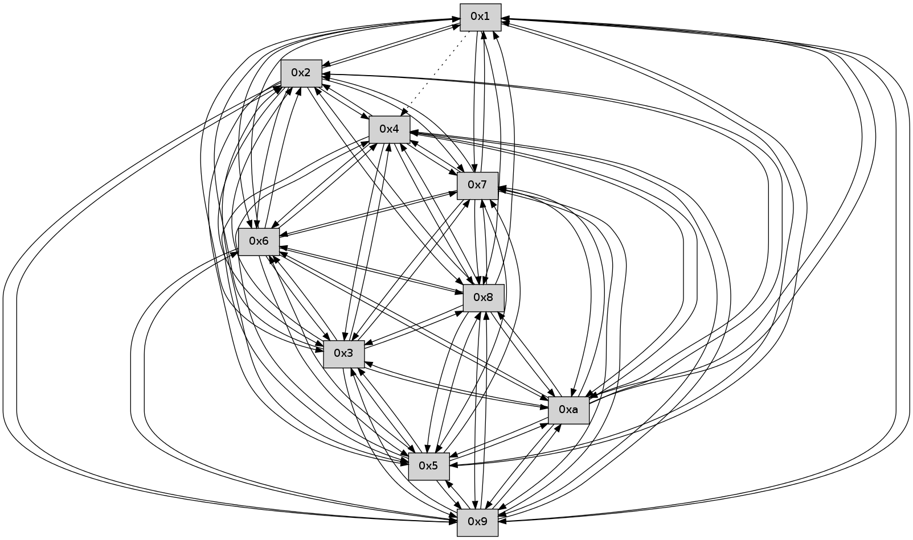

>> << IDX [start] -100 -25 -5 +0 +5 +25 +100 [330.655280113]
 Previous packets
----------------------------------------------------------------------
325.138350 beacon01(faad) #0 coord=01,02,03,04,05,06,07,0a,09,08 cycle=688.0ms assoc
-- color-indic=0 64 37 a2
325.148335 beacon02(faad) #0 coord=01,02,03,04,05,06,07,0a,09,08 cycle=688.0ms assoc 64 a4 93
325.158333 beacon03(faad) #0 coord=01,02,03,04,05,06,07,0a,09,08 cycle=688.0ms assoc 64 de de
325.168334 beacon04(faad) #0 coord=01,02,03,04,05,06,07,0a,09,08 cycle=688.0ms assoc 64 a9 34
325.178333 beacon05(faad) #0 coord=01,02,03,04,05,06,07,0a,09,08 cycle=688.0ms assoc 64 d3 79
325.188334 beacon06(faad) #0 coord=01,02,03,04,05,06,07,0a,09,08 cycle=688.0ms assoc 64 5d ae
325.198334 beacon07(faad) #0 coord=01,02,03,04,05,06,07,0a,09,08 cycle=688.0ms assoc 64 27 e3
325.208340 beacon0a(faad) #0 coord=01,02,03,04,05,06,07,0a,09,08 cycle=688.0ms assoc 64 56 e8
325.218337 beacon09(faad) #0 coord=01,02,03,04,05,06,07,0a,09,08 cycle=688.0ms assoc 64 d8 3f
325.228340 beacon08(faad) #0 coord=01,02,03,04,05,06,07,0a,09,08 cycle=688.0ms assoc 64 a2 72
325.240752 [Hello(4): seq=212 sym=5,7,6,2,3,9,8,10 sysInfo= stat=5:4,0,0,0/7:1,0,0,0/6:5,0,0,0/2:6,0,0,0/3:11,0,0,0/9:12,0,0,0/8:7,0,0,0/10:8,0,0,0]
325.253346 [Hello(3): seq=212 sym=1,7,6,2,4,8,9,10,5 sysInfo= stat=1:1,0,0,0/7:12,0,0,0/6:8,0,0,0/2:6,0,0,0/4:3,0,0,0/8:14,0,0,0/9:3,0,0,0/10:14,0,0,0/5:1,0,0,0]
----------------------------------------------------------------------
325.926486 beacon01(faad) #0 coord=01,02,03,04,05,06,07,0a,09,08 cycle=688.0ms assoc
-- color-indic=0 64 8b a7
325.936468 beacon02(faad) #0 coord=01,02,03,04,05,06,07,0a,09,08 cycle=688.0ms assoc 64 18 96
325.946469 beacon03(faad) #0 coord=01,02,03,04,05,06,07,0a,09,08 cycle=688.0ms assoc 64 62 db
325.956469 beacon04(faad) #0 coord=01,02,03,04,05,06,07,0a,09,08 cycle=688.0ms assoc 64 15 31
325.966470 beacon05(faad) #0 coord=01,02,03,04,05,06,07,0a,09,08 cycle=688.0ms assoc 64 6f 7c
325.976469 beacon06(faad) #0 coord=01,02,03,04,05,06,07,0a,09,08 cycle=688.0ms assoc 64 e1 ab
325.986468 beacon07(faad) #0 coord=01,02,03,04,05,06,07,0a,09,08 cycle=688.0ms assoc 64 9b e6
325.996474 beacon0a(faad) #0 coord=01,02,03,04,05,06,07,0a,09,08 cycle=688.0ms assoc 64 ea ed
326.006474 beacon09(faad) #0 coord=01,02,03,04,05,06,07,0a,09,08 cycle=688.0ms assoc 64 64 3a
326.016475 beacon08(faad) #0 coord=01,02,03,04,05,06,07,0a,09,08 cycle=688.0ms assoc 64 1e 77
326.027610 [Hello(9): seq=155 sym=5,2,3,4,7,6,8,10,1 sysInfo= stat=5:9,0,0,0/2:8,0,0,0/3:10,0,0,0/4:4,0,0,0/7:14,0,0,0/6:7,0,0,0/8:11,0,0,0/10:11,0,0,0/1:2,0,0,0]
326.031277 [Hello(10): seq=144 sym=6,3,2,5,9,8,7,4,1 sysInfo= stat=6:15,0,0,0/3:6,0,0,0/2:15,0,0,0/5:14,0,0,0/9:13,0,0,0/8:6,0,0,0/7:4,0,0,0/4:8,0,0,0/1:6,0,0,0]
326.034283 [Hello(7): seq=212 sym=2,3,5,6,4,8,9,10,1 sysInfo= stat=2:3,0,0,0/3:2,0,0,0/5:10,0,0,0/6:4,0,0,0/4:8,0,0,0/8:10,0,0,0/9:13,0,0,0/10:10,0,0,0/1:11,0,0,0]
326.042759 [Hello(8): seq=155 sym=5,2,3,4,7,6,9,10,1 sysInfo= stat=5:2,0,0,0/2:4,0,0,0/3:3,0,0,0/4:4,0,0,0/7:0,0,0,0/6:4,0,0,0/9:4,0,0,0/10:6,0,0,0/1:13,0,0,0]
326.046145 [Hello(6): seq=212 sym=2,3,5,4,7,8,10,1 sysInfo= stat=2:7,0,0,0/3:4,0,0,0/5:7,0,0,0/4:3,0,0,0/7:8,0,0,0/8:15,0,0,0/10:14,0,0,0/1:12,0,0,0]
----------------------------------------------------------------------
326.714619 beacon01(faad) #0 coord=01,02,03,04,05,06,07,0a,09,08 cycle=688.0ms assoc
-- color-indic=0 64 9f c9
326.724602 beacon02(faad) #0 coord=01,02,03,04,05,06,07,0a,09,08 cycle=688.0ms assoc 64 0c f8
326.734601 beacon03(faad) #0 coord=01,02,03,04,05,06,07,0a,09,08 cycle=688.0ms assoc 64 76 b5
326.744604 beacon04(faad) #0 coord=01,02,03,04,05,06,07,0a,09,08 cycle=688.0ms assoc 64 01 5f
326.754602 beacon05(faad) #0 coord=01,02,03,04,05,06,07,0a,09,08 cycle=688.0ms assoc 64 7b 12
326.764603 beacon06(faad) #0 coord=01,02,03,04,05,06,07,0a,09,08 cycle=688.0ms assoc 64 f5 c5
326.774603 beacon07(faad) #0 coord=01,02,03,04,05,06,07,0a,09,08 cycle=688.0ms assoc 64 8f 88
326.784608 beacon0a(faad) #0 coord=01,02,03,04,05,06,07,0a,09,08 cycle=688.0ms assoc 64 fe 83
326.794608 beacon09(faad) #0 coord=01,02,03,04,05,06,07,0a,09,08 cycle=688.0ms assoc 64 70 54
326.804607 beacon08(faad) #0 coord=01,02,03,04,05,06,07,0a,09,08 cycle=688.0ms assoc 64 0a 19
326.815748 [Hello(4): seq=213 sym=5,7,6,2,3,9,8,10 sysInfo= stat=5:4,0,0,0/7:2,0,0,0/6:6,0,0,0/2:7,0,0,0/3:12,0,0,0/9:13,0,0,0/8:8,0,0,0/10:9,0,0,0]
326.818917 [Hello(3): seq=213 sym=1,7,6,2,4,8,9,10,5 sysInfo= stat=1:1,0,0,0/7:13,0,0,0/6:9,0,0,0/2:6,0,0,0/4:3,0,0,0/8:15,0,0,0/9:4,0,0,0/10:15,0,0,0/5:1,0,0,0]
326.823710 [Hello(2): seq=210 sym=4,5,7,6,3,9,8,10,1 sysInfo= stat=4:7,0,0,0/5:14,0,0,0/7:10,0,0,0/6:5,0,0,0/3:2,0,0,0/9:7,0,0,0/8:6,0,0,0/10:4,0,0,0/1:0,0,0,0]
326.826897 [Hello(5): seq=213 sym=7,6,4,3,1,9,8,10,2 sysInfo= stat=7:0,0,0,0/6:6,0,0,0/4:8,0,0,0/3:11,0,0,0/1:0,0,0,0/9:12,0,0,0/8:2,0,0,0/10:6,0,0,0/2:9,0,0,0]
----------------------------------------------------------------------
327.502750 beacon01(faad) #0 coord=01,02,03,04,05,06,07,0a,09,08 cycle=688.0ms assoc
-- color-indic=0 64 23 cc
327.512732 beacon02(faad) #0 coord=01,02,03,04,05,06,07,0a,09,08 cycle=688.0ms assoc 64 b0 fd
327.522732 beacon03(faad) #0 coord=01,02,03,04,05,06,07,0a,09,08 cycle=688.0ms assoc 64 ca b0
327.532732 beacon04(faad) #0 coord=01,02,03,04,05,06,07,0a,09,08 cycle=688.0ms assoc 64 bd 5a
327.542733 beacon05(faad) #0 coord=01,02,03,04,05,06,07,0a,09,08 cycle=688.0ms assoc 64 c7 17
327.552733 beacon06(faad) #0 coord=01,02,03,04,05,06,07,0a,09,08 cycle=688.0ms assoc 64 49 c0
327.562735 beacon07(faad) #0 coord=01,02,03,04,05,06,07,0a,09,08 cycle=688.0ms assoc 64 33 8d
327.572738 beacon0a(faad) #0 coord=01,02,03,04,05,06,07,0a,09,08 cycle=688.0ms assoc 64 42 86
327.582738 beacon09(faad) #0 coord=01,02,03,04,05,06,07,0a,09,08 cycle=688.0ms assoc 64 cc 51
327.592739 beacon08(faad) #0 coord=01,02,03,04,05,06,07,0a,09,08 cycle=688.0ms assoc 64 b6 1c
327.604216 [Hello(10): seq=145 sym=6,3,2,5,9,8,7,4,1 sysInfo= stat=6:0,0,0,0/3:7,0,0,0/2:0,0,0,0/5:15,0,0,0/9:13,0,0,0/8:7,0,0,0/7:5,0,0,0/4:8,0,0,0/1:6,0,0,0]
327.606710 [Hello(6): seq=213 sym=2,3,5,4,7,8,10,1 sysInfo= stat=2:8,0,0,0/3:5,0,0,0/5:8,0,0,0/4:4,0,0,0/7:8,0,0,0/8:15,0,0,0/10:14,0,0,0/1:12,0,0,0]
327.609141 [Hello(8): seq=156 sym=5,2,3,4,7,6,9,10,1 sysInfo= stat=5:3,0,0,0/2:5,0,0,0/3:4,0,0,0/4:4,0,0,0/7:0,0,0,0/6:5,0,0,0/9:4,0,0,0/10:6,0,0,0/1:13,0,0,0]
327.611843 [Hello(9): seq=156 sym=5,2,3,4,7,6,8,10,1 sysInfo= stat=5:10,0,0,0/2:9,0,0,0/3:11,0,0,0/4:5,0,0,0/7:15,0,0,0/6:8,0,0,0/8:12,0,0,0/10:12,0,0,0/1:2,0,0,0]
327.615369 [Hello(7): seq=213 sym=2,3,5,6,4,8,9,10,1 sysInfo= stat=2:4,0,0,0/3:3,0,0,0/5:11,0,0,0/6:5,0,0,0/4:8,0,0,0/8:11,0,0,0/9:13,0,0,0/10:10,0,0,0/1:11,0,0,0]
----------------------------------------------------------------------
328.290883 beacon01(faad) #0 coord=01,02,03,04,05,06,07,0a,09,08 cycle=688.0ms assoc
-- color-indic=0 64 e7 c2
328.300866 beacon02(faad) #0 coord=01,02,03,04,05,06,07,0a,09,08 cycle=688.0ms assoc 64 74 f3
328.310865 beacon03(faad) #0 coord=01,02,03,04,05,06,07,0a,09,08 cycle=688.0ms assoc 64 0e be
328.320866 beacon04(faad) #0 coord=01,02,03,04,05,06,07,0a,09,08 cycle=688.0ms assoc 64 79 54
328.330865 beacon05(faad) #0 coord=01,02,03,04,05,06,07,0a,09,08 cycle=688.0ms assoc 64 03 19
328.340867 beacon06(faad) #0 coord=01,02,03,04,05,06,07,0a,09,08 cycle=688.0ms assoc 64 8d ce
328.350866 beacon07(faad) #0 coord=01,02,03,04,05,06,07,0a,09,08 cycle=688.0ms assoc 64 f7 83
328.360870 beacon0a(faad) #0 coord=01,02,03,04,05,06,07,0a,09,08 cycle=688.0ms assoc 64 86 88
328.370872 beacon09(faad) #0 coord=01,02,03,04,05,06,07,0a,09,08 cycle=688.0ms assoc 64 08 5f
328.380873 beacon08(faad) #0 coord=01,02,03,04,05,06,07,0a,09,08 cycle=688.0ms assoc 64 72 12
328.393605 [Hello(4): seq=214 sym=5,7,6,2,3,9,8,10 sysInfo= stat=5:5,0,0,0/7:3,0,0,0/6:7,0,0,0/2:8,0,0,0/3:13,0,0,0/9:14,0,0,0/8:9,0,0,0/10:10,0,0,0]
328.396005 [Hello(2): seq=211 sym=4,5,7,6,3,9,8,10,1 sysInfo= stat=4:7,0,0,0/5:15,0,0,0/7:11,0,0,0/6:6,0,0,0/3:2,0,0,0/9:8,0,0,0/8:7,0,0,0/10:5,0,0,0/1:0,0,0,0]
328.403812 [Hello(3): seq=214 sym=1,7,6,2,4,8,9,10,5 sysInfo= stat=1:1,0,0,0/7:14,0,0,0/6:10,0,0,0/2:7,0,0,0/4:3,0,0,0/8:0,0,0,0/9:5,0,0,0/10:0,0,0,0/5:2,0,0,0]
328.406822 [Hello(5): seq=214 sym=7,6,4,3,1,9,8,10,2 sysInfo= stat=7:1,0,0,0/6:7,0,0,0/4:8,0,0,0/3:11,0,0,0/1:0,0,0,0/9:13,0,0,0/8:3,0,0,0/10:7,0,0,0/2:9,0,0,0]
----------------------------------------------------------------------
329.079015 beacon01(faad) #0 coord=01,02,03,04,05,06,07,0a,09,08 cycle=688.0ms assoc
-- color-indic=0 64 5b c7
329.088997 beacon02(faad) #0 coord=01,02,03,04,05,06,07,0a,09,08 cycle=688.0ms assoc 64 c8 f6
329.099000 beacon03(faad) #0 coord=01,02,03,04,05,06,07,0a,09,08 cycle=688.0ms assoc 64 b2 bb
329.118998 beacon05(faad) #0 coord=01,02,03,04,05,06,07,0a,09,08 cycle=688.0ms assoc 64 bf 1c
329.128999 beacon06(faad) #0 coord=01,02,03,04,05,06,07,0a,09,08 cycle=688.0ms assoc 64 31 cb
329.138999 beacon07(faad) #0 coord=01,02,03,04,05,06,07,0a,09,08 cycle=688.0ms assoc 64 4b 86
329.149004 beacon0a(faad) #0 coord=01,02,03,04,05,06,07,0a,09,08 cycle=688.0ms assoc 64 3a 8d
329.159005 beacon09(faad) #0 coord=01,02,03,04,05,06,07,0a,09,08 cycle=688.0ms assoc 64 b4 5a
329.169003 beacon08(faad) #0 coord=01,02,03,04,05,06,07,0a,09,08 cycle=688.0ms assoc 64 ce 17
329.180160 [Hello(6): seq=214 sym=2,3,5,4,7,9,8,10,1 sysInfo= stat=2:9,0,0,0/3:6,0,0,0/5:9,0,0,0/4:4,0,0,0/7:9,0,0,0/9:0,0,0,0/8:0,0,0,0/10:14,0,0,0/1:12,0,0,0]
329.193540 [Hello(9): seq=157 sym=5,2,3,4,7,6,8,10,1 sysInfo= stat=5:11,0,0,0/2:10,0,0,0/3:12,0,0,0/4:5,0,0,0/7:0,0,0,0/6:8,0,0,0/8:12,0,0,0/10:12,0,0,0/1:2,0,0,0]
----------------------------------------------------------------------
329.867147 beacon01(faad) #0 coord=01,02,03,04,05,06,07,0a,09,08 cycle=688.0ms assoc
-- color-indic=0 64 6f df
329.877130 beacon02(faad) #0 coord=01,02,03,04,05,06,07,0a,09,08 cycle=688.0ms assoc 64 fc ee
329.887130 beacon03(faad) #0 coord=01,02,03,04,05,06,07,0a,09,08 cycle=688.0ms assoc 64 86 a3
329.897130 beacon04(faad) #0 coord=01,02,03,04,05,06,07,0a,09,08 cycle=688.0ms assoc 64 f1 49
329.907130 beacon05(faad) #0 coord=01,02,03,04,05,06,07,0a,09,08 cycle=688.0ms assoc 64 8b 04
329.917131 beacon06(faad) #0 coord=01,02,03,04,05,06,07,0a,09,08 cycle=688.0ms assoc 64 05 d3
329.927130 beacon07(faad) #0 coord=01,02,03,04,05,06,07,0a,09,08 cycle=688.0ms assoc 64 7f 9e
329.937137 beacon0a(faad) #0 coord=01,02,03,04,05,06,07,0a,09,08 cycle=688.0ms assoc 64 0e 95
329.947135 beacon09(faad) #0 coord=01,02,03,04,05,06,07,0a,09,08 cycle=688.0ms assoc 64 80 42
329.957135 beacon08(faad) #0 coord=01,02,03,04,05,06,07,0a,09,08 cycle=688.0ms assoc 64 fa 0f
329.972584 [Hello(3): seq=215 sym=1,7,6,2,4,8,9,10,5 sysInfo= stat=1:1,0,0,0/7:14,0,0,0/6:11,0,0,0/2:7,0,0,0/4:3,0,0,0/8:0,0,0,0/9:6,0,0,0/10:0,0,0,0/5:3,0,0,0]
329.978610 [Hello(2): seq=212 sym=4,5,7,6,3,9,8,10,1 sysInfo= stat=4:7,0,0,0/5:0,0,0,0/7:12,0,0,0/6:7,0,0,0/3:3,0,0,0/9:9,0,0,0/8:7,0,0,0/10:5,0,0,0/1:0,0,0,0]
329.981355 [Hello(5): seq=215 sym=7,6,4,3,1,9,8,10,2 sysInfo= stat=7:1,0,0,0/6:8,0,0,0/4:8,0,0,0/3:11,0,0,0/1:0,0,0,0/9:14,0,0,0/8:3,0,0,0/10:7,0,0,0/2:9,0,0,0]